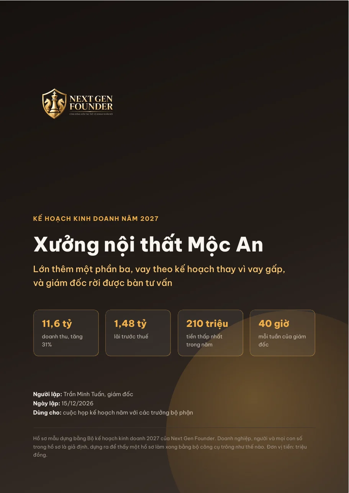
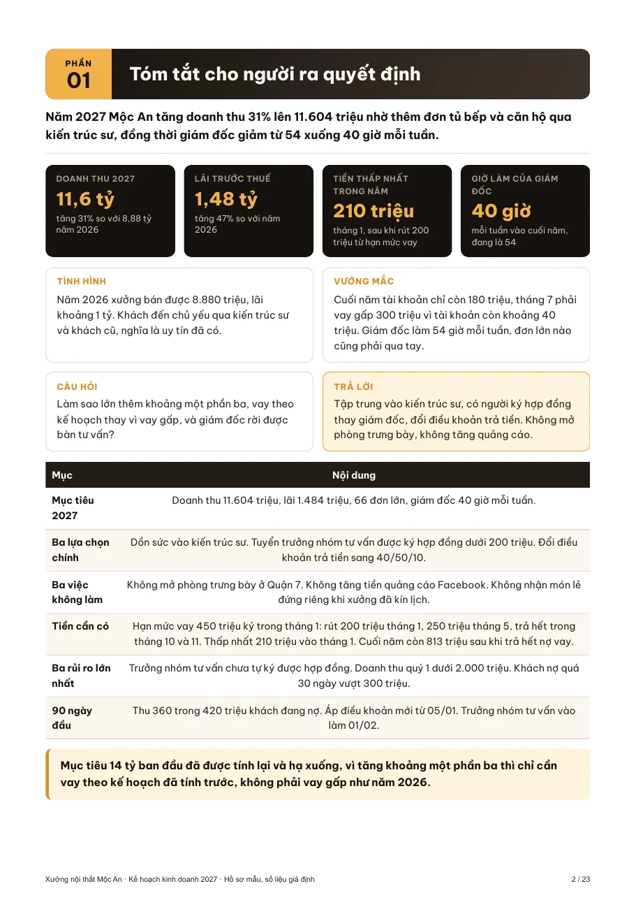
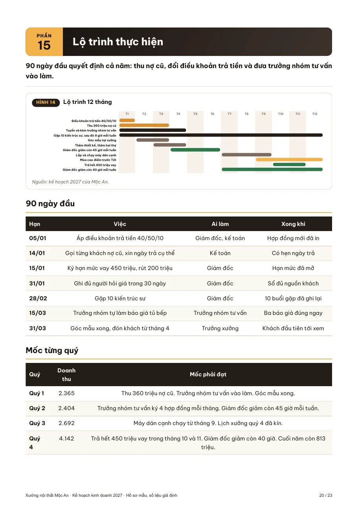
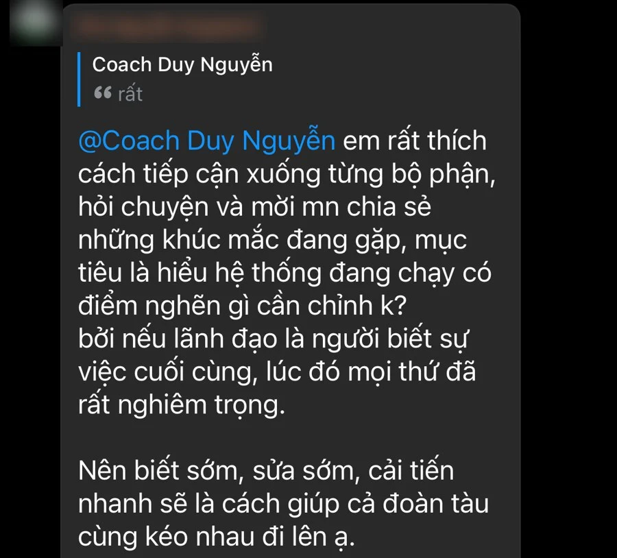

Năm nào cũng làm như năm trước
Doanh thu đứng yên hoặc đi xuống, nhưng anh chị chưa biết năm 2027 phải đổi điều gì.
Giải quyết ở buổi 1Bốn buổi làm việc online cùng Coach Duy Nguyễn. Anh chị tìm hướng đi khác biệt cho doanh nghiệp năm 2027, rồi biến hướng đi đó thành kế hoạch kinh doanh và kế hoạch bán hàng trên chính số liệu của doanh nghiệp mình.
Một chủ phòng khám nha khoa, 15 năm làm nghề, chia sẻ: “Tôi có chuyên môn, có tầm nhìn và rất nhiều kế hoạch, nhưng chưa hiệu quả.”
Doanh thu đứng yên hoặc đi xuống, nhưng anh chị chưa biết năm 2027 phải đổi điều gì.
Giải quyết ở buổi 1Đối thủ bán gần giống mình, giá cũng gần bằng, khách không có lý do gì để chọn mình.
Giải quyết ở buổi 2Càng giảm giá càng bán được, nhưng tiền lãi cuối tháng càng ít.
Giải quyết ở buổi 2 và 3Khách cũ hài lòng nên giới thiệu thêm người, nhưng doanh nghiệp chưa có kế hoạch tự tìm khách mới.
Giải quyết ở buổi 2 và 4Đầu năm đặt mục tiêu doanh thu, tới giữa năm thì trong công ty không còn ai nhắc tới con số đó.
Giải quyết ở buổi 4Nhân viên kinh doanh không biết mỗi tháng phải bán được bao nhiêu, khách sẽ đến từ đâu.
Giải quyết ở buổi 4Anh chị tiếp tục cạnh tranh bằng giá, tiền lãi mỗi năm một ít đi, và anh chị vẫn là người duy nhất biết tháng này phải bán bao nhiêu.
Cuối tháng 11, số liệu năm 2026 gần như đã đủ. Làm xong kế hoạch trước Tết, tháng 1 anh chị bắt tay vào làm luôn, không mất cả quý một để nghĩ xem năm nay làm gì.
Bốn điều khác trong cách làm của chương trình
Chương trình không bắt đầu bằng mẫu bảng tính. Ba buổi đầu dành cho hướng đi: năm 2027 phải đổi gì, khác đối thủ ở đâu, bán cho ai, kiếm tiền từ đâu. Có hướng đi rồi mới đặt mục tiêu.
Bốn buổi gói trong hai tuần, không dồn vào hai ba ngày liền. Giữa hai buổi, anh chị lấy số liệu thật của doanh nghiệp để mang vào buổi sau.
Sau bốn buổi, anh chị có 30 ngày hỗ trợ trong nhóm Zalo và hai buổi hỏi đáp, đúng vào tháng đầu tiên làm theo kế hoạch.
Mỗi buổi ba tiếng, anh chị tham gia ngay tại công ty hoặc ở nhà. Không phải rời công ty hai ba ngày liền.
Xong buổi nào, anh chị có luôn thành phẩm của buổi đó, làm trên doanh nghiệp của mình.
Từ bản tổng kết năm 2026, anh chị thấy doanh nghiệp đang thắng nhờ đâu và năm sau phải đổi gì.
Bán cho ai, khác đối thủ ở điểm nào, và vì sao khách chịu trả mức giá anh chị đặt.
Sản phẩm chủ lực, mục tiêu doanh thu và lợi nhuận, ba việc phải làm trước.
Chỉ tiêu bán hàng từng tháng, khách đến từ đâu, và việc cụ thể cho 90 ngày đầu năm.
Đi kèm chương trình, anh chị nhận bộ kế hoạch kinh doanh 2027: câu lệnh và mẫu soạn sẵn để dựng một hồ sơ kế hoạch đầy đủ, đem ra họp với các trưởng bộ phận. Bộ câu lệnh làm phần lớn việc soạn, anh chị chủ yếu điền số liệu của doanh nghiệp mình. Hồ sơ đầy đủ là phần làm thêm khi anh chị cần; thứ anh chị chắc chắn cầm về sau bốn buổi là kế hoạch một trang.
Dưới đây là ba trang trong hồ sơ mẫu của một xưởng nội thất. Doanh nghiệp, người và số liệu trong hồ sơ là giả định.



Trước buổi 1, anh chị tự tổng kết năm 2026 bằng bộ công cụ có sẵn. Đầu buổi, anh chị đọc kết quả đó để thấy năm nay doanh nghiệp thắng nhờ đâu, thua ở đâu. Sau đó Coach Duy nói về ba cách nghĩ đang cản nhiều chủ doanh nghiệp: cứ làm tốt hơn đối thủ là thắng, muốn có khách thì phải rẻ hơn, doanh thu tăng là doanh nghiệp đang lớn. Anh chị đánh giá lại doanh nghiệp mình để biết năm 2027 phải đổi điều gì.
Mang về: ba điều doanh nghiệp phải đổi trong năm 2027
Phần lớn doanh nghiệp đang bán ở nơi có rất nhiều đối thủ, và không phải ai cũng tìm được một thị trường chưa có người làm. Buổi này anh chị chọn nhóm khách sẽ tập trung, tìm điểm khác biệt mà khách nhìn thấy và chịu trả tiền, rồi đặt giá theo chỗ đứng đó, để có khách mà không phải giảm giá theo đối thủ.
Mang về: bản định vị khác biệt
Từ chỗ đứng đã chọn, anh chị tính xem mỗi sản phẩm lãi bao nhiêu, chọn sản phẩm chủ lực, tính doanh nghiệp sẽ kiếm tiền từ khách mới và khách cũ thế nào, đặt mục tiêu doanh thu và lợi nhuận, rồi chọn ba việc phải làm trước. Sau đó anh chị kiểm tra lại kế hoạch bằng những câu hỏi khó, để thấy chỗ nào còn chưa chắc.
Mang về: kế hoạch kinh doanh 2027 trên một trang
Muốn đạt mục tiêu doanh thu thì mỗi tháng cần bao nhiêu khách mua, bao nhiêu người hỏi thăm, và khách sẽ đến từ đâu: bao nhiêu nhờ khách cũ giới thiệu, bao nhiêu từ những kênh anh chị chủ động tìm. Anh chị chia mục tiêu năm thành chỉ tiêu từng tháng, rồi chia tiếp thành việc cụ thể cho 90 ngày đầu: việc gì, ai làm, tháng nào xong. Mỗi tháng, cả công ty cùng xem chỉ tiêu đã đạt tới đâu, để mục tiêu không bị bỏ quên giữa năm.
Mang về: kế hoạch bán hàng 2027 và việc của 90 ngày đầu
Chương trình không cam kết tăng doanh số. Điều chắc chắn anh chị có là hướng đi và kế hoạch cho năm 2027, làm trên số liệu của chính doanh nghiệp mình.
Anh chị nhận được
Mỗi buổi ba tiếng, Coach Duy Nguyễn trực tiếp dẫn dắt.
Làm ở nhà trước buổi 1.
Tặng kèm bộ kế hoạch kinh doanh 2027 như hồ sơ mẫu ở trên. Mẫu và câu lệnh soạn sẵn, anh chị chép vào ChatGPT là dùng, không cần biết lập trình. Năm sau anh chị dùng lại để tự lập kế hoạch năm 2028.
Để anh chị xem lại khi cần.
Trong 30 ngày sau buổi cuối, anh chị mang kế hoạch đang làm vào để hỏi.
Có người trả lời khi anh chị vướng lúc bắt đầu làm theo kế hoạch.
Ngay khi đăng ký, anh chị nhận bộ công cụ tổng kết năm 2026 và bảng số liệu cần điền. Trước mỗi buổi, anh chị dành 60 tới 90 phút làm bài, cả chương trình khoảng 16 tới 18 tiếng trong hai tuần. Chưa thu thập đủ số liệu kịp buổi làm việc thì dùng bộ số liệu mẫu, về nhà làm lại với số của mình.
Từ buổi 2, đầu buổi cả nhóm cùng xem bài làm ở nhà của vài anh chị. Sau đó anh chị nghe Coach Duy chia sẻ, xem Coach Duy làm mẫu trên màn hình, tự làm trên doanh nghiệp của mình, rồi nhận việc cần làm trước buổi sau.
Anh chị bắt đầu làm theo kế hoạch. Trong 30 ngày, mỗi khi vướng lúc triển khai, anh chị hỏi trong nhóm Zalo và được trả lời. Anh chị báo kết quả tuần đầu so với chỉ tiêu, rồi mang kế hoạch đang làm vào hai buổi hỏi đáp để chỉnh lại cho sát.
Coach Duy Nguyễn tốt nghiệp Đại học Ngoại thương năm 2008, làm phân tích và phát triển thị trường khối ô tô ở Honda Việt Nam, rồi học MBA tại University of Birmingham, chương trình MBA top 70 thế giới theo bảng Financial Times năm 2011. Ở Anh, Duy làm việc tại Deloitte UK và đồng sáng lập Veritag, một công ty khởi nghiệp công nghệ được chính phủ Anh tài trợ. Sang Úc, Duy đồng sáng lập Flexi Mortgage và Gia Binh Group, hệ thống nhà hàng và dịch vụ tiệc cưới.
Tại Việt Nam, Duy là CEO của Next Step Group, công ty đào tạo, và của Kiến Tạo Doanh Nghiệp Việt, công ty dịch vụ marketing, đồng thời đồng sáng lập công ty bất động sản Golden Homes. Duy hoàn thành chứng chỉ Business Strategy and Implementation (triển khai chiến lược kinh doanh) của Harvard. Từ năm 2021 Duy đào tạo cho doanh nghiệp, bắt đầu từ các chương trình nội bộ của MobiFone, AIA và KB Securities, và từ năm 2022 kèm riêng nhiều chuyên gia và chủ doanh nghiệp. Duy là Phó chủ tịch phụ trách đào tạo của cộng đồng doanh nghiệp GTVN, khoảng 1.500 thành viên, và hiện dẫn dắt Cộng đồng Next Gen Founder.
Đang cố vấn chiến lược và kinh doanh cho nhiều doanh nghiệp trong các lĩnh vực y tế, chăm sóc sức khỏe, yoga, đào tạo, dịch vụ, thương mại và bất động sản.
Từ doanh nghiệp lớn trong ngành viễn thông, ngân hàng, bảo hiểm, chứng khoán tới nhiều doanh nghiệp vừa và nhỏ.


“Coach Duy Nguyễn không chỉ đồng hành cùng tôi trong việc phát triển năng lực lãnh đạo, mà còn giúp tôi định hình rõ hơn con đường xây dựng một doanh nghiệp có hệ thống, có đội ngũ và có khả năng tăng trưởng dài hạn.”Chung Thị Thuý Hà, Giám đốc Công ty Nhật Trang, doanh nghiệp 20 năm tuổi.
Chương trình không chia theo ngành. Ngành nào có bán hàng và có số liệu năm 2026 đều làm được, từ cửa hàng, phòng khám, công ty dịch vụ tới xưởng sản xuất.
Tự làm một mình thì không ai hỏi lại. Trong buổi, cả nhóm cùng xem bài làm của vài anh chị, Coach Duy chỉ ra chỗ còn thiếu. Ai chưa được xem bài trong buổi thì hỏi trong nhóm Zalo.
Buổi nào cũng có video ghi lại để anh chị xem lại. Chỗ nào chưa rõ, anh chị hỏi trong nhóm Zalo.
Không trực tiếp. Chương trình dành cho người chủ và người quản lý cốt lõi, tập trung vào hướng đi và kế hoạch. Kỹ năng tư vấn nằm trong quà tặng Sales 3 Điểm Chạm, dành cho anh chị và đội ngũ.
Được. Anh chị có thể cử giám đốc kinh doanh hoặc người quản lý cốt lõi tham gia, hoặc cùng tham gia với người đó. Hướng đi năm 2027 vẫn là quyết định của người chủ, nên nếu cử người khác, anh chị cùng xem bản tổng kết năm 2026 trước buổi 1 và duyệt bản kế hoạch cuối.
Mỗi tuần hai buổi, mỗi buổi ba tiếng, làm việc online qua Zoom. Ngày giờ từng buổi, nhân viên tư vấn sẽ báo khi anh chị đăng ký.
Chương trình online Sales 3 Điểm Chạm về kỹ năng tư vấn bán hàng, dành cho anh chị và đội ngũ sau bốn buổi làm kế hoạch. Đội ngũ tư vấn sẽ báo thời gian nhận khi anh chị đăng ký.
Phí tham gia, lịch từng buổi, hay chương trình áp vào doanh nghiệp mình thế nào, anh chị để lại thông tin ở phiếu bên cạnh hoặc nhắn Zalo 0348 264 003, nhân viên tư vấn sẽ trả lời thẳng.
Anh chị để lại thông tin, nhân viên tư vấn của đội ngũ Next Gen Founder sẽ gọi hoặc nhắn Zalo để báo phí tham gia, ngày giờ từng buổi và xác nhận đăng ký.
Muốn hỏi trước khi đăng ký, anh chị nhắn Zalo đội ngũ Next Gen Founder: 0348 264 003.
Cộng đồng Next Gen Founder là nơi các chủ doanh nghiệp cùng nhau xây doanh nghiệp chạy được cả khi người chủ không có mặt. Mục tiêu của Coach Duy là góp phần tạo nên 10.000 Next Gen Founder tại Việt Nam.
Vì sao nên tham gia
Tham gia cộng đồng không mất phí. Anh chị nhắn Zalo để nhận phiếu đăng ký, điền vài thông tin về doanh nghiệp, đội ngũ Next Gen Founder sẽ xem rồi gửi đường dẫn vào cộng đồng.
Tìm hiểu cộng đồng